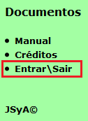
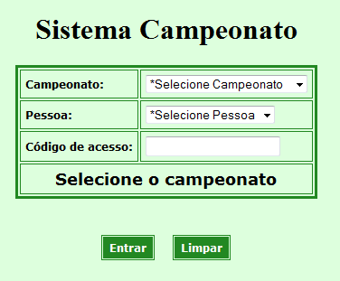
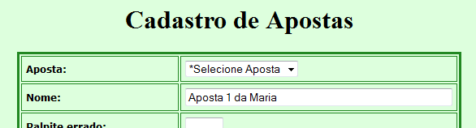
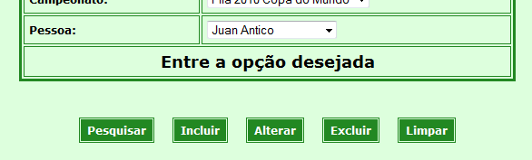
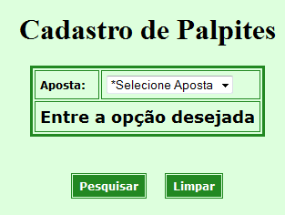
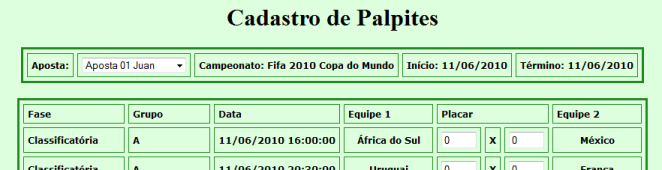
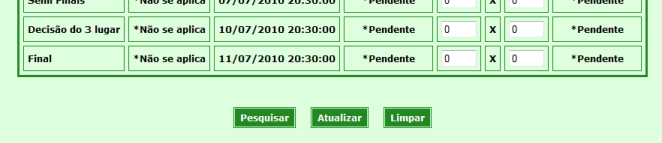

Manual do sistema Campeonato
É muito facíl participar, são apenas 3 passos:
1 - Fazer o Login
No menu a esquerda click em "Entrar/Sair"

Selecione o "Campeonato" e a "Pessoa"
Digite a senha e click em "Entrar"

2 - Criar a Aposta
No menu a esquerda no grupo "Cadastros" click em "Aposta"
Digite um nome para a aposta e click em "Incluir"

...

Obs: todos os outros dados são de controle do sistema
3 - Informar os Palpites
No menu a esquerda no grupo "Cadastros" click em "Palpite"

Selecione a "Aposta" e click em "Pesquisar"
Digite o "Placar" para os jogos e click em "Atualizar"

...

Obs: Você pode salvar os palpites parcialmente mas lembre-se da data limite
Relatórios:
"Campeonato", lista todos os jogos e os resultados dos jogos
"Aposta", lista todos os jogos e os palpites da aposta
"Jogo", lista todos os palpites para do jogo
Classificações:
"Equipes", lista a pontuação e classificação das equipes
"Apostas", lista a pontuação e classificação das apostas
Boa sorte.